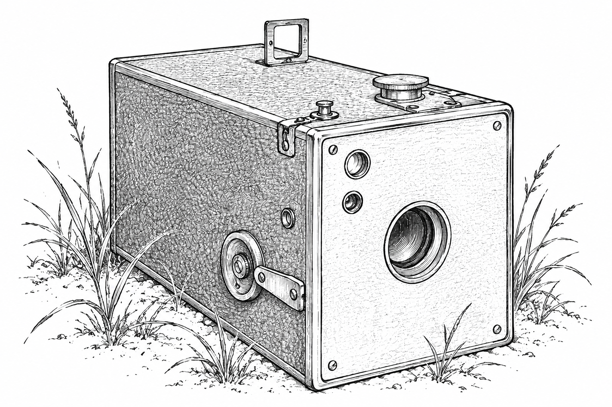

Con Healy's
website.
I'm Con. I'm a Product Manager. I've worked in recommendation systems and on an AI assistant, and before becoming product manager I was an engineer for a few years.
I'm interested in the evolving landscape of AI services and applications. Having spent arguably too long in university, I'm particularly excited by how LLMs are changing research and research intensive professions.
If you share my interests check out my (currently sparsely populated) substack or send me a message. LinkedIn is currently the best place to reach me.